Masterarbeit Projektstand
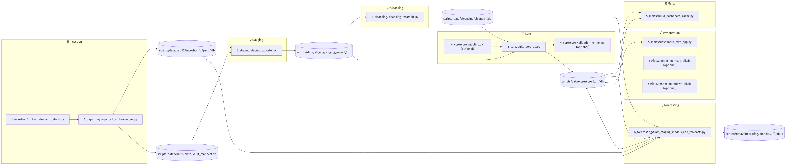
disconnect Events pro
Zeitraum.max_price_diff_abs: maximale absolute Differenz
zwischen Exchanges.max_price_diff_pct: maximale relative Differenz in
Prozent.Verwendete Views:
vw_mart_dashboard_platform_quality_dailyvw_mart_dashboard_price_deviation_dailyvw_mart_dashboard_price_curve_24h_binancePrinzip:
KPI-Logik bleibt in SQL Views. Optional zwecks Performancegewinn werden Cache-Tabellen mit den Daten der Views gefüllt.
Dashboard liest nur konsumfertige Daten.
Keine ad-hoc KPI-Berechnung in der UI.
Bestandteile:
Technik:
scripts/5_marts/dashboard_mvp_app.pyz.B. data/core/core_kpi.db mit Mart
Views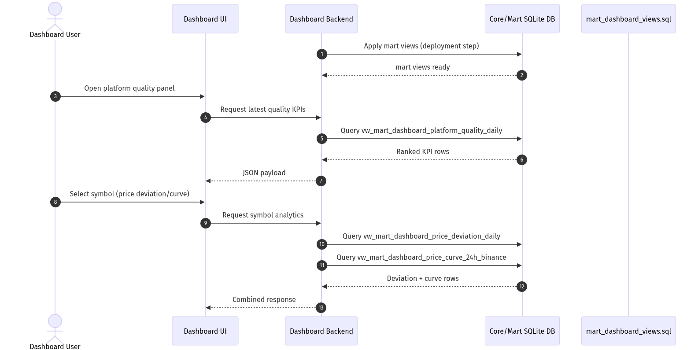
Erste Volumenschätzung: ca. 90 GB/Tag (basierend auf
12h Vorlaufmessung).
Exchange Coverage: nur ein Teil der CCXT-Exchanges liefert stabil Daten.
Home-Network Betrieb kann Disconnect-KPIs verfälschen.
Staging Laufzeiten aktuell noch relativ hoch für schnelle Iterationen.
In initialer Architektur in der alle eingehenden Daten in eine Datenbank geschrieben wurden hat der Stagingprozess für eine Stunde 15-20 Min. Zeit benötigt.
In angepasster Architektur, in der die Daten in VAULT-Partitionen in separaten Datenbanken abgelegt wurden, liegt die Verarbeitungsdauer für 9 einzelne Stunden unter 1 Minute. Die Umstellung auf VAULT-Partitionen hat einen deutlichen Performancegewinn gebracht. Es wurden Datenbanken pro Exchange/Datum/Stunde erzeugt, anstatt alle Daten in einer DB in nur einer Rohdatentabelle zu verwalten. Die Ersparnis der Laufzeit ist auf die nunmehr fehlenden SQL Joins zurückzuführen. Beispiel Layout:
data/vault2_redis/
ingestion/
exchange=aster/date=2026-03-09/hour=15/part_aster_20260309_15.db
exchange=aster/date=2026-03-09/hour=16/part_aster_20260309_16.db
exchange=backpack/date=2026-03-09/hour=15/part_backpack_20260309_15.db
exchange=backpack/date=2026-03-09/hour=16/part_backpack_20260309_16.db
meta/vault_manifest.dbAnstelle einer zentralen Datenquelle, welche die Rohdaten in eine zentrale Datenbank schreibt, wie es anfangs der Fall war, wurde die Systemarchitektur angepasst und verwendet nun eine Redis-Instanz (Real-Time DB of key/value data), die in einem Docker-/Podman-Container gestartet wird.
Das ermöglicht die Integration weiterer Datenquellen und -Senken durch zusätzliche Prozesse, die über Redis kommunizieren, sowie das Speichern der kompletten Redis-Daten durch den Redis-Prozess selbst.
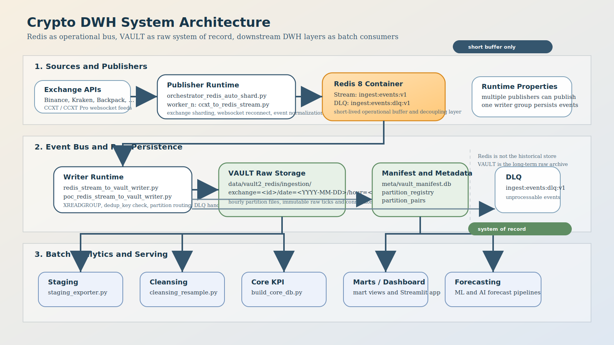
Datenquellen, in diesem Fall ein einzelnes Skript
ccxt_to_redis_stream.py, publizieren ihre Daten in einen
Redis-Stream.
Datensenken, in diesem Fall das Skript
redis_stream_to_vault_writer.py, erhalten Events des
Streams und schreiben die Daten in die entsprechende
VAULT-Partition.
Diese Prozesse laufen dauerhaft, sofern ausreichend Festplattenkapazität zur Verfügung steht.
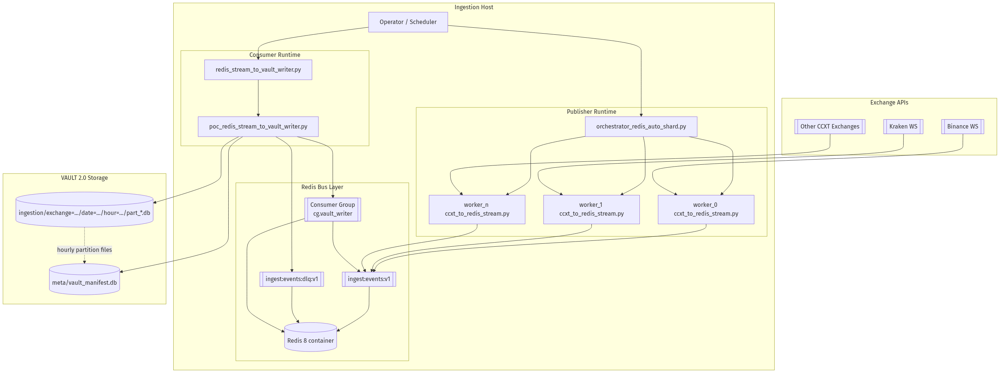
Der Staging-Prozess exportiert durch das Skript
staging_exporter.py Daten auf Basis ihres Zeitstempels. Er
unterstützt Parameter, die es ermöglichen, Zeitfenster in Stundenrastern
zu definieren, die exportiert werden sollen. Somit ist es möglich,
mehrere z. B. 2-Stunden-Intervalle zu exportieren.
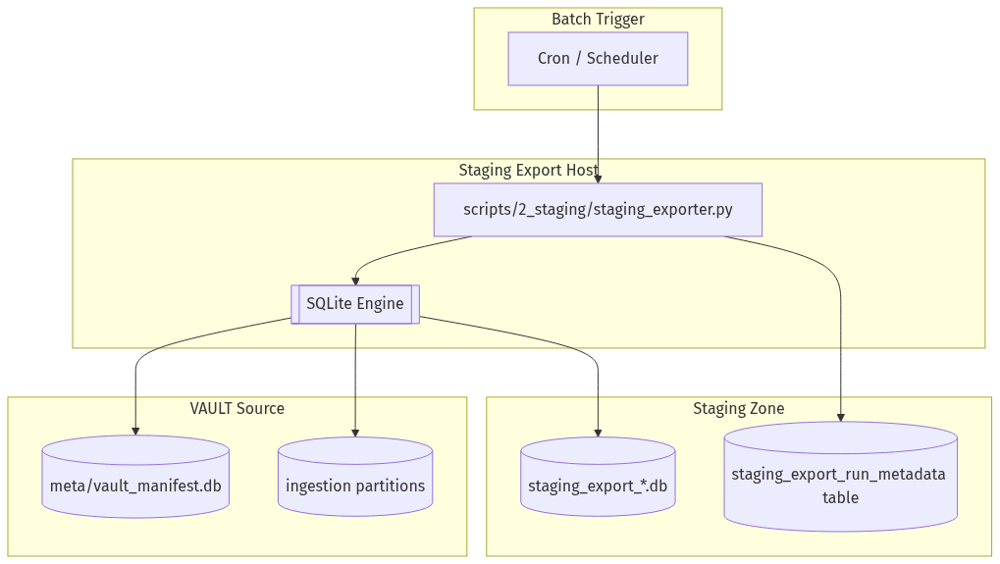
Der Cleansing-Prozess (cleansing_resample.py)
transformiert die Staging-Daten in definierte Intervalle (default:
60s).
Fehlende Daten werden je nach Konfiguration für einen maximalen Zeitraum linear interpoliert oder mit dem letzten Wert aufgefüllt.
Ein Qualitätskriterium ist das Alter der Daten sofern die Rohdaten Lücken aufweisen.
Ein stabiles Intervall ermöglicht das Vergleichen der Preisinformationen an identischen Zeitpunkten.
Der Prozess schreibt die Daten in eine gemeinsame Datenbank.
Die Cleansing-DB
bietet eine stabile Grundlage für den Vergleich zwischen verschiedenen Börsen.
reduziert Rauschen und Volumen im Vergleich zu Subsekunden- oder 5-Sekunden-Bins.
entspricht dem aktuellen Ziel einer Tagesanalyse unter begrenzten Speicherbedingungen.
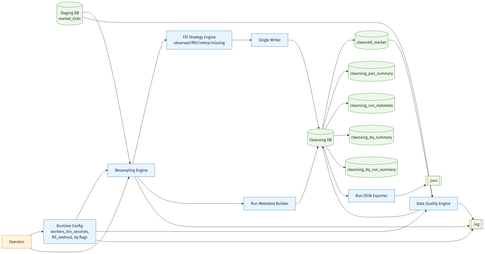
Das Dashboard verwendet die core_kpi-Datenbank zur
Anzeige der gewünschten Informationen.
Der Prozess build_core_db.py aggregiert Informationen
aus den unterschiedlichen Quellen und schreibt sie in eine
KPI-Datenbank.
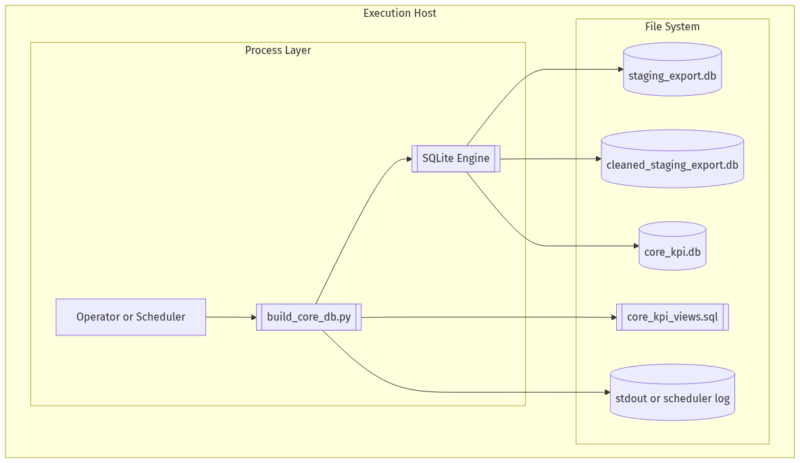
Hier eine Darstellung nach Star-Schema eines Subsets der in der DB gespeicherten Daten.
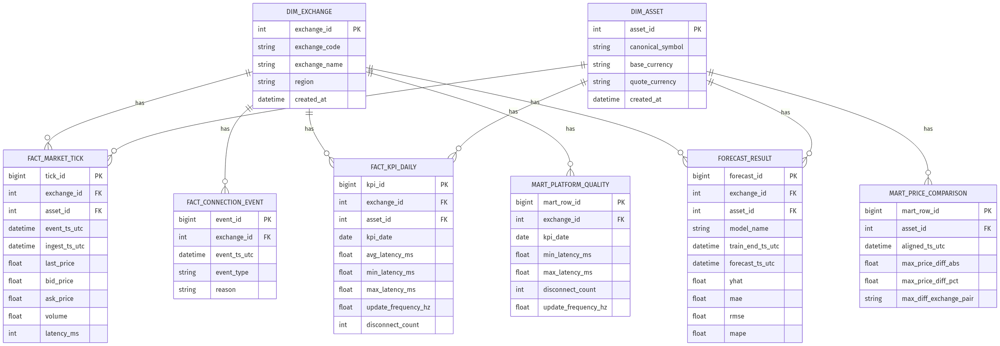
Marts sind die Datenquellen der darzustellenden OLAPs.
OLAPs werden durch SQL-Statements repräsentiert, die je nach Datenbankschema mehr oder weniger Zeit zur Ausführung benötigen.
In der KPI-Datenbank sind die OLAPs als Views definiert, die wie Tabellen aussehen, aber in Realität SQL-Statements sind, die zur Laufzeit ausgeführt werden und ihre Daten aus unterschiedlichen Tabellen zusammenführen. Um den Prozess zu beschleunigen, wurden Cache-Tabellen erzeugt, die das Ergebnis der Views speichern und somit keine Joins zur Laufzeit mehr benötigen.
Das Dashboard kommt auch ohne Cache-Tabellen aus, nutzt sie aber, sofern sie vorhanden sind.
Hier ein Architekturschaubild der Cache-Tabellen für die Darstellung der Preisunterschiede im Dashboard.
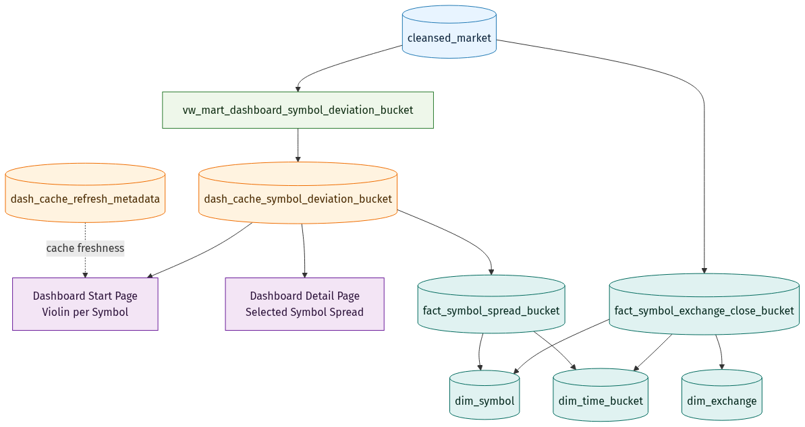
Ein während der Bearbeitung des Projekts hinzugefügtes Feature ist die Berechnung und Darstellung von Vorhersagen der Preisentwicklung der Symbole.
Es wurden 2 Ansätze für die Vorhersage der Zeitreihen verwendet:
Machine Learning – der klassische Ansatz auf Basis des
Python-Pakets scikit-learn
Deep Learning – der AI-Ansatz unter Verwendung vortrainierter Zeitreihenvorhersage-Modelle
Die Regressions-Modelle “Ridge”” und “Histogram Gradient Boosting” wurden durch das Skript “train_staging_models.py” auf Basis der Staging Exporte Trainiert. Zu beachten ist, daass der Staging Export der letzten 2 Stunden nicht zu Trainingszwecken verwendet wird, denn der soll im Dashboard vorhergesagt werden und dazu ist es besser die vorherzusagenden Daten dem Modell vorher nicht ‘gezeigt’ zu haben.
Die trainierten Modelle werden im Dateisystem gespeichert (je Exchange und Symbol ein Modell), so dass sie bei Bedarf an anderer Stelle wiederverwendung finden können.
Das Modell wird vom forecaster “forecast_with_trained_models.py” verwendet um die Daten des letzten Staged Zeitfensters damit zu füttern und die Vorhersagen zu den zukünftigen Zeitpunkten in der corr KPI Datenbank zu speichern.
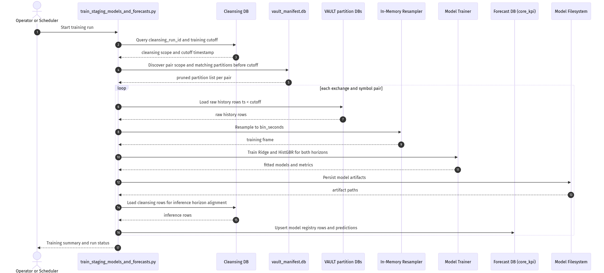
Normalerweise bedeutet DL Modelle zu trainineren viel Zeit dafür einzuplanen. Abhägig von der DL Architektur des KModellls und der damit verbundenen Trainigsparameter, sowie der Menge von Trainingsdaten und vorhandener Hardware ist die Berechnung um einiges langwieriger als ML Modelle zu trainieren.
In dieser Projektarbeit aber wurde ein vortrainiertes Modell “Cronos2” verwendet, dass keine zusätzliche Trainigsphase benötigen soll um gut zu performen. Zusätzlich wurde ein ebenfalls vortrainiertes Modell (“MOIRA2”) in die Pipeline mit aufgenommen jedoch wurde der Prozess des ‘trainierens’ und der forecaster nach integration des neuen Modells nicht erneut aufgerufen, daher sind Vorhersagen damit in der aktuellen Version (12.03.2026) nicht in einer der core_KPI Datenbanken enthalten.
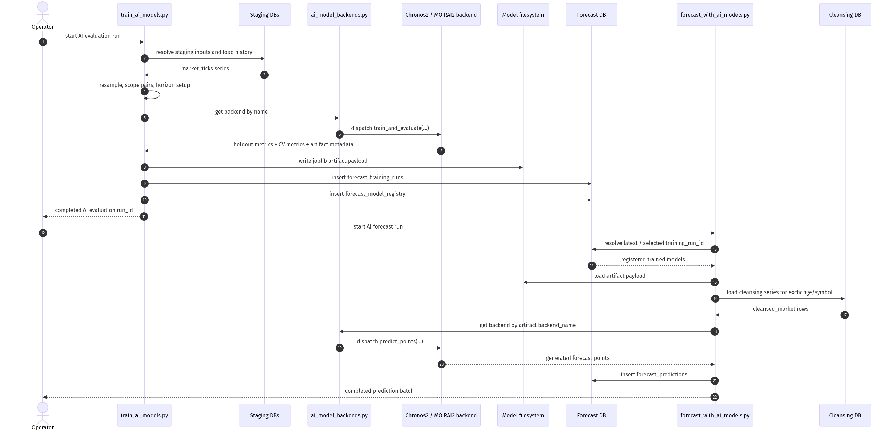
Das Dashboard erscheint ein wenig unübersichtlich und es bedarf ein Wenig Übung um zu verstehen was darin alles enthalten ist.
Die OLPAs aus der Initialen Zielsetzung
Plattformqualität
disconnect Events pro
Zeitraum.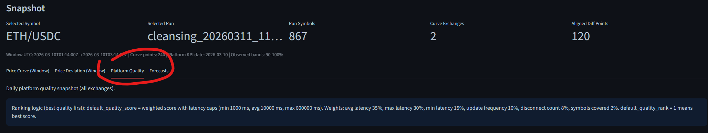
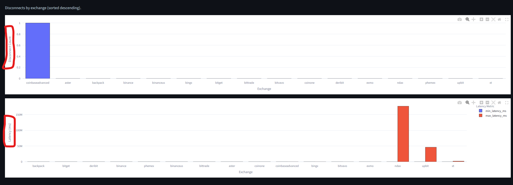
Preisabweichung
max_price_diff_abs: maximale absolute Differenz
zwischen Exchanges.max_price_diff_pct: maximale relative Differenz in
Prozent.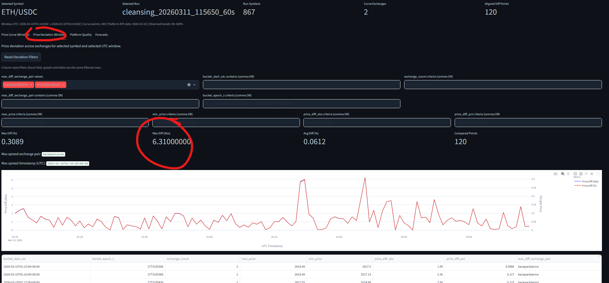
sind jedoch alle enthalten
Die Herausforderung liegt viel mehr darin, die richtige core_KPI Datenbank zu laden, die dazu psaende Cleansing-DB sofern man mehrere Läufe auf den gleichen Datensatz ausgeführt hat, und die passende forecast Datensätze zu wählen.
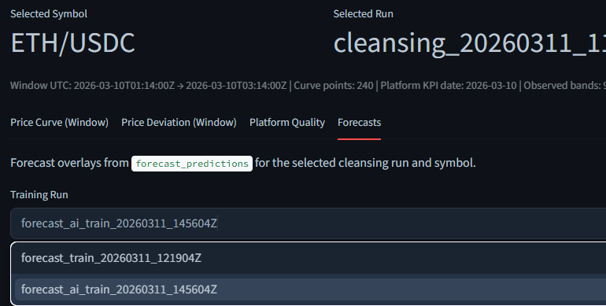
Man kann keine invalide Kompbination wählen, weil die metadaten der core KPI Datenbank nur gültige Kombinationen zulässt, trotzdem ist ein wenig Übung im Umgang mit dem Dashboard notwendig.
Da es aaber nur darstellen soll, was alles in kurzer Zeit innerhalb eines Weiterbildungsprojektes möglich ist, genügt mir die aktuelle Verion.
Das komplette Projekt habe ich mit Hilfe von ‘codex’ umgesetzt.
Ich habe nicht eine Zeile der über 20.000 Zeilen Code selbst geschrieben.
find . -name *.py -print0 | wc -l --files0-from=- 502 ./docs/KW11/moirai_2_0_fulltutorial_substack.py 1240 ./docs/KW11/chronos2_retail_substack.py 493 ./scripts/4_core/core_validation_runner.py 570 ./scripts/4_core/smoke_test_core_kpi_views.py 341 ./scripts/4_core/core_pipeline.py 634 ./scripts/4_core/build_core_db.py 446 ./scripts/4_core/smoke_test_core_pipeline.py 591 ./scripts/5_marts/build_dashboard_cache.py 2805 ./scripts/5_marts/dashboard_mvp_app.py 559 ./scripts/2_staging/staging_exporter.py 1666 ./scripts/3_cleansing/cleansing_resample.py 230 ./scripts/1_ingestion/ingestion_common.py 936 ./scripts/1_ingestion/orchestrator_auto_shard.py 1365 ./scripts/1_ingestion/ingest_all_exchanges_ws.py 10 ./scripts/1_ingestion/redis_stream_to_vault_writer.py 304 ./scripts/1_ingestion/orchestrator_redis_auto_shard.py 10 ./scripts/1_ingestion/poc_ccxt_to_redis_stream.py 686 ./scripts/1_ingestion/poc_redis_stream_to_vault_writer.py 927 ./scripts/1_ingestion/ccxt_to_redis_stream.py 621 ./scripts/6_forecasting/train_ai_models.py 572 ./scripts/6_forecasting/forecast_with_ai_models.py 604 ./scripts/6_forecasting/forecast_with_trained_models.py 703 ./scripts/6_forecasting/ai_model_backends.py 61 ./scripts/6_forecasting/fine_tune_ai_models.py 1949 ./scripts/6_forecasting/train_staging_models.py 1936 ./scripts/6_forecasting/train_staging_models_and_forecasts.py 20761 total (crypto) wgo@vmd191183:~/dev/crypto_DWH$
Meine Aufgabe habe ich eher darin gesehen meine Projektidee in Worte zu fassen, und die AI schrittweise anzuleiten was zu tun ist.